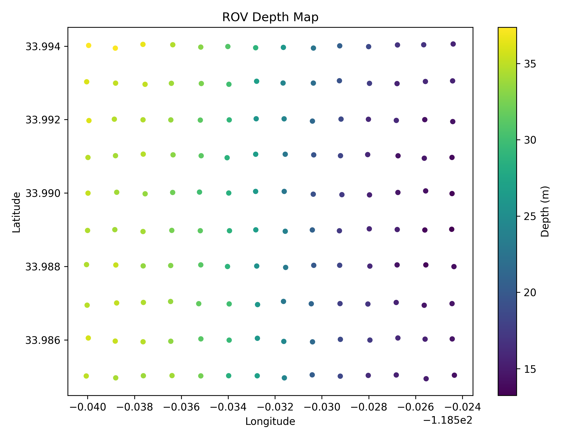
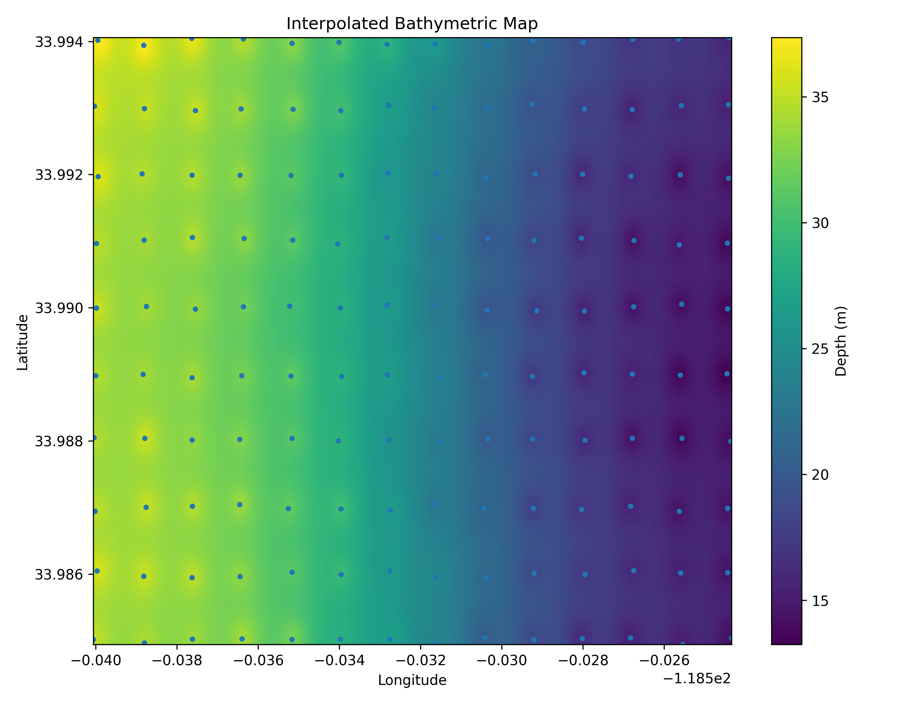
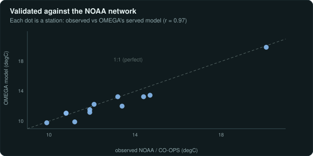

What Makes It Special
Four Ideas Shape the Whole Portal.
Before the walkthrough, the short version. These four design decisions are what make the portal feel like a ship's bridge console rather than a dashboard — each one is unpacked in the sections below.
Interface
The Globe Is the Interface
A live 3D globe fills the entire screen. There are no permanent sidebars, and no menus clutter the edges of the map: the relevant tools and data slide in only when you tap something — a buoy, a region you've drawn — and slide away again when you click back to open ocean.
4D State
One Clock, One Depth, Every Layer
The ocean isn't a flat map — it's a moving, layered volume. The whole portal stays locked to one shared "where and when": move the master clock or the depth slider and every layer updates together, in step.
Visual Honesty
Solid Means Measured, Wispy Means Predicted
Real measurements from the hardware are drawn solid and sharp — hard-edged pins and bars you could almost reach out and touch. Forecasts and model data (like Copernicus winds and currents) are drawn as soft, semi-transparent, flowing particles. And one hard rule: modeled or forecast data is never used to fill gaps in the hardware's real measurements — missing telemetry is rendered explicitly as a visual gap.
AI Copilot
Honu: Just Ask What You're Seeing
Honu is an AI copilot that runs fully offline on a local model. It is strictly read-only and analytical — none of the tools it can reach are able to change anything — and it runs an autonomous daily anomaly patrol that proactively briefs the operator on spatial outliers rather than waiting to be asked.
How It Works · The Interface
The Glass Bridge.
The Mission Portal is a browser workbench, written in plain JavaScript, for 3D ocean visualization — the full-screen view it presents is called the "Glass Bridge." It layers dozens of different data views — local sensor readings alongside ten animated Copernicus ocean fields like winds and currents — over one shared design system.
The base layer is a 3D globe that occupies 100% of the viewport, rendered with WebGL (the browser's interface for drawing directly with the graphics card) and powered by Deck.gl/CesiumJS. The design keeps the map clean: instead of permanent menus, tools appear in context and disappear when you're done with them. The globe is the interface.
How It Works · Workspaces
Operational Workspaces.
The portal is divided into dedicated workspaces tailored for specific mission phases — watch the ocean live, plan a route, dig through the data, or administer the hardware.
/observe
Live Observatory
Features 3D particle physics powered by GPU shaders to animate wind and currents, a live view of the mesh network showing which nodes can currently reach each other over their LoRa and JANUS links, and an overlay that flags readings that fail automated quality checks (QARTOD).
/plan
Routing & Hazards
A global ocean A* wayfinding router that costs paths by significant wave height and treats GEBCO depth and seamarks as hazards, plus live AIS vessel ingestion shown on the map. Planned: a Lagrangian drift/spill simulator (not yet built; the AIS feed is not wired to any dispersion sim).
/analyze
Data Library
A standalone data lab allowing operators to filter, rank, and correlate ground truth against historical API models, and upload offline CSV/GeoJSON logs without polluting the live operational database.
/admin
Engineering Deck
Behind strict administrative authentication. Controls hardware configuration, gateway runtime toggles, HaLow AP/STA pairing, and API credential loading.
/public
Public Federation
A read-only mode with command and routing tools disabled. Designed as a safe URL state for classrooms and researchers to view live telemetry and interact with 3D environmental visualizations.
How It Works · 4D State
One Clock and One Depth, Shared by Every Layer.
The ocean isn't a flat map — it's a moving, layered volume. So the whole portal stays locked to one shared "where and when": move the clock or the depth slider and every layer updates together, in step.
Time
Master Time Clock
Scrubbing the timeline backward pauses live WebSocket streams and simultaneously queries historical databases for local telemetry, ocean physics (Copernicus), and redraws the exact active mesh topology for that specific second.
Depth
Z-Axis Slicer
A persistent depth slider allows operators to slice from 0m down to -2000m. Doing so dynamically redraws the colors and temperature layers on the globe for that depth, so the ocean reads as a 3D volume instead of a flat surface.
How It Works · AI Orchestration
Why Honu Only Sees Some Tools at a Time.
The gateway/copilot.py module decides what to do with each request. Small local LLMs (large language models, like Qwen2.5 7B) cannot reliably pick the correct tool if given a dump of ~100 different tools. Honu solves this by filtering the available tools down based on 16 Intent Groups. Every tool in that registry is read-only, and a tool call that isn't in the registry is refused outright — the full safety story is in the hard problems below.
Ocean Science
Global Federations
Tools like get_argo_floats, get_coral_reef_watch, and get_ocean_currents allow the AI to automatically query NASA and Copernicus databases.
Maritime Security
Fishing & SAR
The AI can use search_fishing_vessels and get_gfw_fishing_stats to pull Synthetic Aperture Radar hits from Global Fishing Watch.
Fleet Navigation
UI Automation
Tools like navigate_to_page and highlight_element allow Honu to actually drive the operator's 3D Glass Bridge via WebSockets.
How It Works · Spatial Mathematics
Natural Language to Geo-Bounds.
When an operator asks "Show me buoys near the East Coast", feeding that raw string into an external API will fail. The Copilot engine executes strict spatial pre-processing before the LLM even sees the message.
Execution: The Python _preprocess_query function scans the text against a registry of 30+ geographic regions. It translates "east coast" into a strict mathematical bounding box [-82.0, 24.0, -66.0, 45.0]. The engine then securely injects this box into the tool parameters. This eliminates AI hallucination—the model is physically unable to invent fake GPS coordinates.
Honu Execution Loop
sequenceDiagram
participant U as Operator
participant P as Intent Preprocessor
participant M as LLM Engine
participant R as Tool Registry
participant DB as SQLite WAL
U->>P: "Are there Argo floats near Hawaii?"
P->>P: Extract "Hawaii" -> bbox[-160, 18, -154, 22]
P->>M: Inject [GLASS BRIDGE CONTEXT] & system prompt
M->>R: call: `get_argo_floats_in_bbox`
R->>DB: SELECT * FROM argo WHERE lat/lon in bbox
DB-->>R: Return JSON array
R-->>M: Inject data into context
M-->>U: "Found 12 floats. I've highlighted them."
How It Works · Language Processing
The Query Preprocessor.
When an operator types a natural language request, feeding it directly into a small parameter LLM often results in incorrect tool selection or hallucinated coordinates. OMEGA intercepts all queries using a dedicated _preprocess_query function.
Pattern Recognition: The preprocessor scans the raw string for 18 oceanographic metric synonyms (e.g., mapping "SST" or "water temp" to sea-surface-temperature). It simultaneously cross-references a library of predefined bounding boxes (e.g., _GEO_BOXES["east coast"]). To prevent "east coast" from accidentally triggering a generic "us" bounding box, the Python engine mathematically sorts the keys by string length descending.
System Directives: Because the frontend concatenates previous chat turns into a single payload, the preprocessor strictly trims the payload to the first paragraph (\n\n). If a match is found, the engine invisibly injects a rigid system directive into the conversation history, mathematically forcing the LLM to use the correct tool and coordinates, eliminating hallucination entirely.
gateway/copilot.pydef _preprocess_query(history: list[dict[str, Any]]) -> list[dict[str, Any]]:
# Find the last user message
user_text = ""
for msg in reversed(history):
if msg.get("role") == "user":
user_text = (msg.get("content") or "").lower().strip()
break
# Prevent multi-paragraph pollution from frontend concatenation
if "\n\n" in user_text:
user_text = user_text.split("\n\n")[0].strip()
# Detect metric
detected_metric: str | None = None
for phrase, metric in sorted(_METRIC_KEYWORDS.items(), key=lambda x: -len(x[0])):
if phrase in user_text:
detected_metric = metric
break
# (Directives injected based on detected metric and geographic bbox)
# ...
How It Works · Execution Engine
Auto-Execution Overrides.
Even with preprocessor directives, 7B parameter models can still stubbornly refuse to select the correct analytical tool. For example, the spot_sample tool only returns weather data—it completely lacks salinity and dissolved-oxygen arrays. If an operator asks for salinity, the LLM will often hallucinate and blindly fire spot_sample anyway.
The Override: OMEGA employs an _detect_autoexec bypass. When critical metric pathways (like salinity) are detected, the Copilot Engine completely circumvents the LLM's decision-making process. The Python backend manually executes the API call via httpx.ASGITransport against the get_measurement_statistics endpoint, fetches the live data, and injects the results directly into the LLM's context window as a simulated tool response.
Result: The AI is downgraded from a "decision maker" to a mere "summarizer," dramatically increasing the deterministic reliability of the agent while retaining its natural language fluidity.
gateway/copilot.pydef _detect_autoexec(history: list[dict[str, Any]]) -> dict[str, Any] | None:
# Detect metric and location using sorted keyword registries
# ...
params: dict[str, Any] = {"metric_name": detected_metric}
if detected_bbox:
params.update({
"min_lat": str(detected_bbox["min_lat"]),
"max_lat": str(detected_bbox["max_lat"]),
"min_lon": str(detected_bbox["min_lon"]),
"max_lon": str(detected_bbox["max_lon"]),
})
return {
"tool": "get_measurement_statistics",
"path": "/v1/measurements/statistics",
"params": params,
}
The Hard Problems
What Actually Made This Difficult.
The sections above read clean. Getting there wasn't. These are the fights that shaped the portal — each one a real problem, hit in practice, with the fix that shipped.
Routing
The Fiji → Hawaii Dateline Bug
The problem: the route-planner once sent a boat from Fiji to Hawaii the long way — 13,000 nautical miles the wrong way around the planet, instead of the 2,700-mile hop right next door. The bug: it treated the edge of the map (the International Date Line) as a wall, when the left and right edges of a world map are really the same place. The fix: let the search "wrap around" that edge, so the short path across it became reachable. Read the full story →
Synchronization
Hardware That's Offline for Hours
The problem: because edge nodes operate on aggressive battery-saving duty cycles, they are often offline and entirely uncontactable for hours at a time. The frontend cannot assume that clicking a "Format NVRAM" button instantly formats the storage. The fix: OMEGA models all physical assets on the map as Digital Twins. The UI manages strictly decoupled state variables for every user action: pending (the operator clicked the button in the UI), synced (the shore gateway queued the command into the DTN — delay-tolerant network — mesh), and reported (the hardware edge node physically acknowledged the change and beamed the result back).
web/src/types/MissionState.ts
export type SyncStatus = 'pending' | 'synced' | 'reported' | 'failed';
export interface DigitalTwinCommand {
command_id: string;
target_node: string;
intent: string;
payload: any;
// Tripartite State Tracker
// pending: UI clicked, waiting on network
// synced: Shore gateway confirmed receipt
// reported: Physical edge node confirmed execution over LoRa
status: SyncStatus;
timestamps: {
requested_at: string;
synced_at?: string;
reported_at?: string;
};
}
AI Safety
Making an AI Safe Next to Real Hardware
The problem: AI hallucinations are dangerous, especially when dealing with physical hardware on a deployed edge node. The fix: Honu is strictly read-only and analytical, and it runs fully offline on a local Ollama model or falls back to cloud (Anthropic). The prompt engine enforces absolute read-only constraints: it is physically impossible for the LLM to execute a mutating API call or alter remote fleet parameters. Unlike standard chatbot implementations that just "ask" the AI not to break things, OMEGA physically isolates the AI execution environment: the ~100-tool registry exposed to the LLM explicitly does not contain functions that perform POST or PUT requests to the SQLite database. None of the tools Honu can reach are able to change anything — it can read from the system, but it has no way to write to it. The system prompt rigorously reinforces this architectural boundary, and if the LLM attempts to hallucinate a command (e.g. execute_format_nvram), the orchestration loop catches the unregistered tool call, refuses to run it, and returns an explicit safety warning to the operator.
gateway/copilot.py
SYSTEM_PROMPT = """You are Honu, the OMEGA Intelligence Engine.
1. READ-ONLY OPERATIONS: You are strictly an analytical and navigational tool.
- You must NEVER send outbound telemetry or execute hardware controls.
2. DATA PURITY: You hold ZERO built-in knowledge of this deployment.
- Every fact must come from a tool call against the gateway's live API.
3. AMNESIA PREVENTION: You cannot "see" the user's screen.
- Before each message, you receive a [GLASS BRIDGE CONTEXT] block."""
Validated Spectral Analysis
Recovering the Twice-Daily Atmospheric Tide.
A spectral analysis is only worth showing if it resolves a known physical signal. OMEGA runs a Welch power-spectrum estimate over its own barometer's pressure time-series and recovers the S2 semidiurnal atmospheric tide at a period of roughly 11.99 hours—a real, textbook-predictable oscillation in surface pressure. Resolving it from the gateway's own data validates that the spectral pipeline is wired correctly end to end.
Welch Method
Segment Averaging
The barometer series is split into overlapping windowed segments and the per-segment periodograms are averaged. This trades a little frequency resolution for a far more stable spectral estimate than a single raw FFT of the whole record.
Time to Frequency
Period Recovery
The estimate converts the time-domain pressure record into power-versus-frequency, where the dominant peaks correspond to physical periods (in hours) rather than abstract bin indices.
S2 Tide
~11.99 h Confirmation
A clear peak lands near the 12-hour mark, matching the S2 semidiurnal atmospheric tide. Because the period is known independently, recovering it is a ground-truth check on the analysis rather than a discovered claim.
Collaboration & Science
Federation, Journals & Scoring.
Beyond live observation, the portal carries the machinery for working with peers, recording the research process, and grading a mission after the fact.
Federation Layer
Peers on the Map
The Observe map can render the federation directory—this gateway plus announced peers—as a toggleable layer. Markers are color-coded teal for self, blue for an active peer, and gray for a revoked peer, with tooltips exposing the operator, region, and policy for each entry.
Lab Journal
Campaigns & Entries
Research campaigns are first-class objects with a lifecycle of planned, active, and done. Journal entries are typed as note, hypothesis, observation, or decision; hypotheses track their own state of open, supported, or refuted. This structured record is the substrate for DOI-ready dataset packaging.
Mission Scoring
Plan vs. Actual
After a transit, the portal scores the sailed track against the planned route: cross-track error statistics (mean, max, and p90), planned versus actual path length, and the gap between the planned destination and where the platform actually ended up.
Sensor Annotations
Notes Pinned to Data
Operators can pin persistent notes to a single point or a range on a series—for example "sensor knocked" or "calibration." These annotations travel with the data and render directly on the charts, so context is never lost between sessions.
Mathematical Signal Processing
QARTOD Quality Control Math.
The gateway/qc.py engine is the mathematical workhorse of the shore system, with the spatial buddy check living in gateway/buddy_check.py. It crunches historical SQLite telemetry points using the QARTOD (Quality Assurance / Quality Control of Real-Time Oceanographic Data) framework. The equations below are illustrative of the approach rather than verbatim transcriptions of the code.
Spike Detection via First Derivative: When a hydrophone passes a thermocline, it might record a massive, legitimate spike in temperature (an ocean front). Standard deviation checks would flag this as an error. OMEGA uses a first-derivative spike test of the form |V2 - V1| - |V3 - V1| / 2 > Spike_Threshold to distinguish a sudden spike that returned to the baseline (a likely sensor glitch) from one that established a new baseline (a legitimate oceanographic event).
Gross Range Processing: For localized anomalies, the numpy arrays execute vectorized operations using the Median Absolute Deviation (MAD): MAD = median(|Xi - median(X)|). Because standard averages are destroyed by massive outliers, the MAD provides a robust center. A value beyond MAD * 1.4826 * 3 is flagged as suspect; beyond 6 sigma it is flagged as a hard failure.
gateway/qc.pydef _threshold_bundle(values: list[float]) -> dict[str, float] | None:
# Calculate QARTOD compliant statistical bounds
center = np.median(values)
mad = np.median(np.abs(values - center))
robust_sigma = mad * 1.4826
return {
"gross_range_suspect_min": center - robust_sigma * 3,
"gross_range_suspect_max": center + robust_sigma * 3,
"gross_range_fail_min": center - robust_sigma * 6,
"gross_range_fail_max": center + robust_sigma * 6,
}
gateway/buddy_check.py
def buddy_check(target, neighbors, *, max_diff: float):
# Spatial QARTOD check: a reading is only trusted if it
# agrees with its geographic "buddies" within max_diff.
# An isolated outlier that disagrees with every nearby
# station is flagged as suspect rather than accepted.
if not neighbors:
return "unevaluated"
deltas = [abs(target.value - n.value) for n in neighbors]
if min(deltas) > max_diff:
return "suspect"
return "pass"
Depth Mapping
Bathymetry & IDW Math.
The gateway/bathymetry_ingest.py and bathymetry_export.py modules handle massive acoustic sounding files (CSV). The pipeline normalizes millions of overlapping sonar pings, filters out acoustic multipath errors, and passes the clean data into the 3D Inverse Distance Weighting (IDW) interpolation engine.
The Mathematics: Edge node acoustic sweeps are fundamentally sparse—they only collect data along the physical transit path. To generate a continuous topological surface, OMEGA uses the mathematical IDW formula: Z_est = Σ (Z_i / D_i^p) / Σ (1 / D_i^p). A target cell's depth is calculated by sampling known data points within a radius. Points physically closer to the target cell (small D_i) exert exponentially higher gravitational "pull" on the final estimate, governed by the power parameter p.
Execution: The Python engine calculates this massive N-body problem using heavily vectorized NumPy matrix broadcasting. It generates a high-resolution 2D grid, which is mathematically translated into GeoJSON contour polygons for the Mission Portal's WebGL engine.
gateway/bathymetry_core.py
def calculate_idw(grid_x, grid_y, points, values, power=2.0):
# Flatten the grid for vectorized NumPy distance calculation
grid_points = np.c_[grid_x.ravel(), grid_y.ravel()]
# Calculate the Euclidian distance matrix between grid and known soundings
dist = cdist(grid_points, points)
# Apply the Inverse Distance Weighting mathematics
# Prevent divide-by-zero for points directly on top of soundings
dist = np.where(dist == 0, 1e-10, dist)
weights = 1.0 / (dist ** power)
# Calculate the normalized topological estimate
z_est = np.sum(weights * values, axis=1) / np.sum(weights, axis=1)
return z_est.reshape(grid_x.shape)
Spatial Interpolation Mathematics
IDW & Kriging Algorithms.
When a remote sensor conducts a sonar survey, it generates discrete point clouds with massive unmapped voids between the transect lines. OMEGA must mathematically estimate the depth of these voids to construct a continuous 3D topographic map.
gateway/bathymetry.py
Inverse Distance Weighting (IDW)
When generating the bathymetric grid, OMEGA uses an IDW algorithm to estimate the depth of unmapped coordinates based on nearby soundings. It projects the coordinates to a localized flat plane using the Earth's radius (6,371,008.8m).
def _estimate_depth(
points: list[dict[str, Any]], *,
center_x: float, center_y: float,
power: float, neighbors: int,
) -> tuple[float, float] | None:
# ... distance calculation ...
distances.sort(key=lambda item: item[0])
selected = distances[:neighbors]
numerator = 0.0
denominator = 0.0
for distance, depth_m in selected:
# Distance clamped to 0.25m to prevent division by zero
weight = 1.0 / max(distance, 0.25) ** power
numerator += depth_m * weight
denominator += weight
if denominator == 0:
return None
return numerator / denominator, selected[0][0]
The math applies a power weight (default 2.0) so a ping 2 meters away has 4 times less influence. Distances are clamped to max(distance, 0.25) to prevent infinite weights at exact coordinates.
gateway/bathymetry_grid.py
GEBCO Fallback Grid
Because deployed sensors only report bathymetry where they sit, an open-ocean route has no depth context by default. OMEGA bundles a coarse global elevation grid (0.25 degrees, sourced from GEBCO) to fill the gaps between real soundings, with bilinear sampling and a nearest-cell fallback.
def seafloor_depth_m(lat: float, lon: float) -> float | None:
# Bilinear sampling of the 0.25-degree grid
fi = (lat - _LAT0) / GRID_RESOLUTION_DEG
fj = (lon - _LON0) / GRID_RESOLUTION_DEG
i0 = min(max(int(fi), 0), n_lat - 2)
j0 = min(max(int(fj), 0), n_lon - 2)
ti = min(max(fi - i0, 0.0), 1.0)
tj = min(max(fj - j0, 0.0), 1.0)
a00 = float(grid[i0, j0])
a01 = float(grid[i0, j0 + 1])
a10 = float(grid[i0 + 1, j0])
a11 = float(grid[i0 + 1, j0 + 1])
# Any land corner means this cell straddles a coastline.
# Leave near-shore depth to sensor soundings.
if a00 >= 0.0 or a01 >= 0.0 or a10 >= 0.0 or a11 >= 0.0:
return None
top = a00 + (a01 - a00) * tj
bottom = a10 + (a11 - a10) * tj
altitude = top + (bottom - top) * ti
return round(-altitude, 1)
Algorithm Implementation
Executing IDW in Python.
To generate topographic maps from raw sonar ping arrays, OMEGA utilizes a deterministic Inverse Distance Weighting (IDW) algorithm. This is calculated directly using core Numpy tensor operations across a meshed raster grid.
scripts/csv_to_png_depth_interpolated.py
import numpy as np
def idw_interpolation(x, y, z, xi, yi, power=2.0, epsilon=1e-12):
"""
Inverse Distance Weighting (IDW) spatial interpolation.
Args:
x, y: 1D numpy arrays of known longitude/latitude coordinates.
z: 1D numpy array of known depth soundings.
xi, yi: 2D meshgrid arrays representing the target output raster.
power: Weighting power (higher p = steeper decay of influence).
"""
zi = np.zeros_like(xi, dtype=float)
# Iterate across the target 2D raster grid
for row in range(xi.shape[0]):
for col in range(xi.shape[1]):
# Calculate the Euclidean distance from this pixel to every known sonar ping
dx = x - xi[row, col]
dy = y - yi[row, col]
dist = np.sqrt(dx * dx + dy * dy)
# Prevent division by zero if a pixel perfectly overlaps a sounding
if np.any(dist < epsilon):
zi[row, col] = z[np.argmin(dist)]
continue
# Apply the IDW mathematical formula: W_i = 1 / (d_i ^ p)
weights = 1.0 / np.power(dist, power)
# Calculate the weighted average of the depths
zi[row, col] = np.sum(weights * z) / np.sum(weights)
return zi
The Math: The weight of a known sonar point decreases as the distance increases. The power variable controls the steepness of this decay. A power of 2.0 (inverse square) is standard for bathymetry, meaning a ping 2 meters away has 4 times less influence than a ping 1 meter away.
Sonar Physics
Acoustic Sounding Cones.


Sonar physics dictate that a transducer does not shoot a laser-thin line directly downwards; it emits an expanding acoustic cone. In shallow water (2 meters), the acoustic footprint on the floor is extremely small, resulting in highly accurate, localized depth readings.
However, in deep water (500 meters), the acoustic footprint can cover a massive area, physically averaging out steep underwater cliffs or small wrecks. The OMEGA bathymetry processor dynamically adjusts confidence weights based on depth-derived footprint sizes. Shallow readings are trusted completely; deep readings are mathematically smoothed to account for the wider acoustic dispersion, ensuring the final generated 3D map is physically accurate.
Bathymetric Execution
Interpolated Depth Soundings.
The bathymetry-sounding.json envelope is generated thousands of times per hour by the sensor's active sonar pinging the lakebed. Note the specific metric bathymetry-depth: 12.4m encoded in the strict SenML format.
Execution: The gateway consumes these disparate envelopes and stores them as massive arrays of raw coordinate points in SQLite. The Mission Portal then queries these points and executes an Inverse Distance Weighting (IDW) interpolation algorithm directly in the client's browser. This mathematics transforms discrete, scattered sonar pings into a beautiful, continuous 3D contour map, giving operators instant, real-time feedback on the topography of the unmapped ocean floor.
bathymetry-sounding.example.json{
"spec": "omega.observation-envelope/1",
"message_id": "bathymetry-example-0001",
"message_type": "observation",
"origin": {
"node_id": "urn:OA:node:survey-a:vessel-01",
"device_id": "multibeam-sonar-main",
"capability_ref": "https://example.invalid/omega/things/survey-a-vessel-01-multibeam.td.json",
"firmware_version": "0.2.0"
},
"routing": {
"priority": "normal",
"ttl_s": 86400,
"ack_mode": "gateway",
"max_hops": 8
},
"sample": {
"sampled_at": "2026-04-18T19:00:00Z",
"sequence": 1,
"location": {
"lat": 36.801,
"lon": -121.79
}
},
"tags": {
"site": "survey-a",
"platform": "survey-vessel",
"medium": "water",
"station_name": "Survey Vessel 01"
},
"payload": {
"mode": "senml",
"content_type": "application/senml+json",
"schema_ref": "urn:ietf:rfc:8428",
"records": [
{
"bn": "urn:OA:thing:survey-a:vessel-01:multibeam/",
"bt": 1776548400
},
{
"n": "bathymetry-depth",
"u": "m",
"v": 12.4
}
]
}
}
Offline Processing
Data Pipeline Scripts.
While the Mission Portal handles real-time IDW rendering, OMEGA also provides a suite of offline Python scripts for generating publishable scientific assets directly from raw CSV exports.
csv_to_png_depth_contours.py: Generates high-resolution, static 2D heatmaps with distinct topological contour lines using matplotlib. These static PNGs are designed for inclusion in formal academic papers.csv_to_kmz_depth_overlay.py: Takes the interpolated depth arrays and projects them over satellite imagery, packaging the result into a compressed KMZ file. This allows marine biologists to drag-and-drop the 3D bathymetric overlay directly into Google Earth Pro for geospatial fusion with historical coral reef datasets.
scripts/csv_to_png_depth_contours.py
import numpy as np
import matplotlib.pyplot as plt
def build_grid(points, grid_size, power):
lats = np.array([p["lat"] for p in points], dtype=float)
lons = np.array([p["lon"] for p in points], dtype=float)
depths = np.array([p["depth_m"] for p in points], dtype=float)
lon_min, lon_max = lons.min(), lons.max()
lat_min, lat_max = lats.min(), lats.max()
# Generate the empty raster meshgrid
xi_vals = np.linspace(lon_min, lon_max, grid_size)
yi_vals = np.linspace(lat_min, lat_max, grid_size)
xi, yi = np.meshgrid(xi_vals, yi_vals)
# Execute IDW Math
zi = idw_interpolation(lons, lats, depths, xi, yi, power=power)
return lons, lats, depths, xi, yi, zi, lon_min, lon_max, lat_min, lat_max
def render_contours(xi, yi, zi, lons, lats, levels=12, output_path="map.png"):
plt.figure(figsize=(9, 7))
# Render the base color heatmap
filled = plt.contourf(xi, yi, zi, levels=levels)
# Overlay crisp contour lines on top of the heatmap
plt.contour(xi, yi, zi, levels=levels)
plt.colorbar(filled, label="Depth (m)")
# Scatter plot the actual raw sonar ping locations
# to show where the interpolation occurred
plt.scatter(lons, lats, s=6.0)
plt.xlabel("Longitude")
plt.ylabel("Latitude")
plt.title("Bathymetric Contour Map")
plt.tight_layout()
plt.savefig(output_path, dpi=300)
plt.close()
Data Standards
CF-Compliant NetCDF Pipelines.
Scientific data is fundamentally useless if it is trapped in proprietary formats. OMEGA is designed for institutional interoperability and strictly adheres to the Climate and Forecast (CF) Metadata Conventions (cf_metadata.py).
Execution: All raw JSON/TLV telemetry collected by the edge nodes is eventually serialized into massive, multi-dimensional NetCDF arrays (cf_netcdf.py). These arrays include rigorous metadata describing the exact sensor used, the calibration date, and the QA/QC flags. This allows the data to be ingested directly into national supercomputing repositories (like NCEI) for long-term climate modeling archival.
4D Data Arrays
Copernicus 4D Data Cubes.
The gateway does not just read flat CSV files; it is engineered to parse true 4D data cubes (Latitude, Longitude, Depth, Time) using the copernicus_cube.py architecture. These cubes represent terabytes of oceanic modeling data.
Relevance: By accessing the Copernicus Marine Service APIs, the OMEGA gateway extracts specific slices of this data cube. This allows the visualization portal to render complex, volumetric slices of ocean salinity and ocean color (Chlorophyll-a), and mathematically overlay the exact 3D physical position of the edge node directly inside the simulated data cube.
Model Validation Skill Score
The portal's Copernicus sea-surface-temperature model is statistically validated against the independent NOAA observation network, achieving strong agreement with a correlation of r = 0.971 and an RMSE of 0.774 °C across 12 independent stations.

Engineering Reality
What Is and Isn't Done.
Honest status, not a pitch. The DTO v3 3D twin is partially implemented and in-flight, not finished. Honu is read-only and analytical, but it now also runs an autonomous daily anomaly patrol that proactively briefs the operator on spatial outliers rather than waiting to be asked.